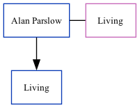

Alan Parslow, the husband of Margaret J Horne (the second cousin once-removed on the father's side of Nigel Horne), and married Margaret (with whom he had 1 surviving child) in 1963.
Family Tree

Generated by ged2site. Last updated on Nov 13, 2024